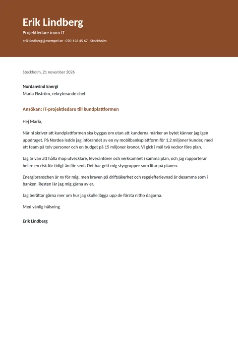

<!-- titel: Skiss Skapa brev, startflödet | rum: brev -->
<!--@del brev-exempel-visare-stil-->
<style>
  main img { height: auto; }

  /* hela flödet står på väggen, som Skriv brev inloggat */
  .flode { padding: 20px 0 56px; }
  .fl-topp { display: grid; gap: 14px; }
  .fl-bak { display: inline-flex; align-items: center; gap: 8px; min-height: 44px; font-size: 15px; font-weight: 600; color: var(--vagg-mjuk); text-decoration: none; }
  .fl-bak svg { width: 18px; height: 18px; }
  .fl-topp .h1 { font-size: 32px; max-width: 18ch; }
  .fl-topp .varde { font-size: 17px; max-width: 54ch; }
  .fl-rad { display: grid; gap: 24px; margin-top: 26px; }
  .panel { background: var(--papper); color: var(--ink-1); border-radius: 26px; overflow: hidden; box-shadow: 0 8px 0 rgba(0, 0, 0, .3); min-width: 0; }
  .vagg .panel .h2 { color: var(--ink-1); }
  .vagg .panel .liten { color: var(--ink-3); }
  .panel-huvud { display: flex; flex-wrap: wrap; align-items: baseline; justify-content: space-between; gap: 2px 16px; padding: 16px 18px; background: var(--vagg-3); color: var(--vagg-ink); }
  .panel-huvud b { font-family: var(--disp); font-size: 19px; letter-spacing: -0.01em; }
  .panel-huvud span { font-size: 14px; color: var(--vagg-mjuk); }
  .panel-kropp { display: grid; gap: 18px; padding: 18px 18px 4px; }
  .etk { display: block; margin-bottom: 8px; font-size: 12.5px; font-weight: 700; letter-spacing: .09em; text-transform: uppercase; color: var(--ink-2); }
  .inp { display: flex; align-items: center; gap: 10px; min-height: 54px; padding: 0 16px; border-radius: 15px; border: 2px solid var(--kant-stark); background: var(--golv); font-size: 16.5px; font-weight: 600; }
  .inp.tom { font-weight: 400; color: var(--ink-3); }
  .inp.omr { align-items: flex-start; min-height: 150px; padding: 14px 16px; line-height: 1.5; }
  .inp .chip { margin-left: auto; flex: none; }
  .hjalp { margin-top: 8px; font-size: 14px; line-height: 1.45; color: var(--ink-3); }
  .rakna { display: grid; grid-template-columns: 1fr auto; gap: 12px; align-items: center; margin-top: 10px; font-size: 13.5px; font-weight: 600; color: var(--ink-3); }
  .mer { display: flex; align-items: center; gap: 12px; min-height: 52px; padding: 0 14px; border-radius: 15px; border: 2px dashed var(--kant-stark); font-size: 15.5px; font-weight: 700; color: var(--ton-ink); }
  .mer i { display: grid; place-items: center; width: 28px; height: 28px; border-radius: 9px; background: var(--ton); font-style: normal; font-size: 19px; }
  .mallrad { display: grid; grid-template-columns: 46px 1fr auto; gap: 12px; align-items: center; padding: 10px 14px 10px 10px; border-radius: 16px; background: var(--golv); }
  .mallrad img { width: 46px; border-radius: 3px; box-shadow: 0 0 0 1px rgba(0, 0, 0, .1), 0 3px 0 rgba(0, 0, 0, .14); }
  .mallrad small { display: block; font-size: 11.5px; font-weight: 700; letter-spacing: .08em; text-transform: uppercase; color: var(--ink-3); }
  .mallrad b { display: block; font-size: 15.5px; line-height: 1.3; }
  .mallrad b span { font-weight: 400; color: var(--ink-2); }
  .mallrad u { display: inline-flex; align-items: center; min-height: 44px; font-size: 15px; font-weight: 700; text-underline-offset: 4px; text-decoration-thickness: 2px; white-space: nowrap; }
  .panel-fot { display: grid; gap: 12px; margin-top: 14px; padding: 16px 18px 20px; border-top: 2px solid var(--kant); }
  .panel-fot p { font-size: 14.5px; line-height: 1.45; color: var(--ink-2); }
  .panel-fot p b { color: var(--ink-1); }
  .knapp.av { background: var(--koppar-ljus); box-shadow: 0 5px 0 #D9A07A; color: #7A4A2A; }
  .arkspalt { width: 100%; max-width: 470px; margin: 0 auto; min-width: 0; }
  .arkspalt .mv-ark { border-radius: 3px; }
  .arktext { margin-top: 20px; text-align: center; font-size: 14.5px; line-height: 1.5; color: var(--vagg-mjuk); }
  .arktext b { color: var(--vagg-ink); }
  .dolj-smal { display: none; }
  @media (min-width: 1000px) {
    .flode { padding: 36px 0 96px; }
    .fl-topp .h1 { font-size: 46px; max-width: 22ch; }
    .fl-rad { grid-template-columns: minmax(0, 560px) minmax(0, 1fr); gap: 64px; align-items: start; margin-top: 36px; }
    .panel-kropp { padding: 24px 24px 6px; }
    .panel-huvud, .panel-fot { padding-left: 24px; padding-right: 24px; }
    .panel-fot { grid-template-columns: 1fr auto; align-items: center; }
    .dolj-smal { display: block; }
  }

  /* utkastet klart: första stycket på arket, resten väntar */
  .sparr { display: grid; gap: 14px; padding: 22px 18px 22px; }
  .sparr .h2 { font-size: 28px; }
  .sparr p { font-size: 16px; line-height: 1.55; color: var(--ink-2); }
  .sparr .knapp { width: 100%; }
  .sparr .liten { text-align: center; }
  .sparr .far { display: grid; gap: 8px; }
  .sparr .far li { display: grid; grid-template-columns: 30px 1fr; gap: 10px; align-items: center; padding: 10px 12px; border-radius: 14px; background: var(--golv); font-size: 15px; font-weight: 600; }
  .sparr .far li i { display: grid; place-items: center; width: 30px; height: 30px; border-radius: 10px; background: var(--ton-ink); color: #fff; }
  .sparr .far li i svg { width: 16px; height: 16px; }
  .sparr .far li.p i { background: var(--koppar-mjuk); color: var(--koppar-ink); }
  .utkast { position: relative; }
  .utkast .lapp { position: absolute; z-index: 3; right: 5%; top: 15.4%; height: 34px; padding: 0 14px; border-radius: 999px; background: var(--koppar); color: var(--koppar-text); font-size: 13.5px; font-weight: 700; display: inline-grid; place-items: center; box-shadow: 0 4px 0 var(--koppar-klack); --rot: -3deg; transform: rotate(-3deg); }
  .utkast .vantar { position: absolute; z-index: 3; left: 12%; right: 12%; bottom: 13%; display: grid; grid-template-columns: 34px 1fr; gap: 12px; align-items: center; padding: 12px 14px; border-radius: 16px; background: var(--papper); color: var(--ink-1); box-shadow: 0 5px 0 rgba(0, 0, 0, .22), 0 18px 36px rgba(0, 0, 0, .2); font-size: 14px; font-weight: 600; line-height: 1.35; }
  .utkast .vantar i { display: grid; place-items: center; width: 34px; height: 34px; border-radius: 11px; background: var(--ton); color: var(--ton-ink); }
  .utkast .vantar i svg { width: 18px; height: 18px; }
  @media (min-width: 1000px) { .sparr { padding: 30px 26px; } .sparr .h2 { font-size: 36px; } }
  @media (max-width: 999px) { .vand-smal { order: -1; } .vand-smal.arkspalt { max-width: 330px; } }

  /* välj mall: alla 40 */
  .valjare { background: var(--papper); color: var(--ink-1); border-radius: 26px; overflow: hidden; box-shadow: 0 8px 0 rgba(0, 0, 0, .3); margin-top: 22px; }
  .v-huvud { display: flex; align-items: center; gap: 12px; padding: 16px 12px 12px 18px; }
  .v-huvud b { font-family: var(--disp); font-weight: 800; font-size: 24px; letter-spacing: -0.02em; margin-right: auto; }
  .v-stang { display: grid; place-items: center; width: 44px; height: 44px; border-radius: 13px; border: 2px solid var(--kant-stark); font-size: 22px; line-height: 1; }
  .v-filter { display: flex; flex-wrap: wrap; gap: 8px; padding: 0 18px; }
  .v-filter span { display: inline-grid; place-items: center; height: 44px; padding: 0 16px; border-radius: 13px; border: 2px solid var(--kant-stark); border-bottom-width: 4px; font-size: 15px; font-weight: 700; }
  .v-filter span.pa { background: var(--vagg); border-color: var(--vagg-3); color: var(--vagg-ink); }
  .v-rad { padding: 12px 18px 0; font-size: 14.5px; color: var(--ink-2); }
  .v-rutnat { display: grid; grid-template-columns: repeat(3, minmax(0, 1fr)); gap: 8px; padding: 14px 12px 16px; }
  .vm { position: relative; display: grid; grid-template-columns: minmax(0, 1fr); gap: 6px; justify-items: center; padding: 8px 6px 8px; border-radius: 14px; border: 2px solid transparent; background: var(--golv); font-size: 13px; font-weight: 700; color: var(--ink-1); }
  .vm img { width: 100%; max-width: 112px; border-radius: 2px; box-shadow: 0 0 0 1px rgba(0, 0, 0, .08), 0 3px 0 rgba(0, 0, 0, .12); }
  .vm[aria-pressed='true'] { border-color: var(--koppar); background: #FFF7F0; }
  .vm i { position: absolute; left: 6px; top: 6px; height: 22px; padding: 0 8px; border-radius: 999px; background: var(--positiv-mjuk); color: #1F5C41; font-style: normal; font-size: 12px; display: inline-grid; place-items: center; }
  .vm i.v { background: var(--koppar); color: var(--koppar-text); }
  .v-fot { display: grid; gap: 12px; padding: 16px 18px 20px; border-top: 2px solid var(--kant); }
  .v-fot p { font-size: 16px; color: var(--ink-2); }
  .v-fot p b { font-family: var(--disp); font-weight: 800; font-size: 22px; color: var(--ink-1); margin-right: 6px; }
  @media (min-width: 700px) { .v-rutnat { grid-template-columns: repeat(5, minmax(0, 1fr)); } }
  @media (min-width: 1000px) { .v-huvud { padding: 22px 20px 14px 28px; } .v-filter, .v-rad { padding-left: 28px; padding-right: 28px; } .v-rutnat { grid-template-columns: repeat(8, minmax(0, 1fr)); gap: 12px; padding: 18px 24px 22px; } .v-fot { grid-template-columns: 1fr auto; align-items: center; padding: 18px 28px 22px; } }

  .skissnot { margin-top: 56px; padding: 14px 16px; border-radius: 16px; border: 2px dashed var(--koppar); background: #FFF7F0; color: var(--koppar-text); font-size: 14.5px; line-height: 1.5; }
  .skissnot b { display: block; font-size: 12.5px; letter-spacing: .09em; text-transform: uppercase; color: var(--koppar-ink); }
</style>

<!--@del nav-->

<main>
  <section class="vagg flode">
    <div class="bredd">

      <!-- Läge 1: besökaren kommer från visaren med ?yrke=projektledare&mall=koppar -->
      <div class="fl-topp">
        <a class="fl-bak" href="#"><svg viewBox="0 0 24 24" fill="none" stroke="currentColor" stroke-width="2.2" stroke-linecap="round" stroke-linejoin="round"><path d="M19 12H5M11 6l-6 6 6 6"/></svg>Tillbaka till exemplet för projektledare</a>
        <h1 class="h1">Skriv ditt personliga brev som projektledare</h1>
        <p class="varde">Tre fält, sedan skriver vi utkastet. Du behöver inget konto för att komma igång, och du ser resultatet innan du bestämmer dig.</p>
      </div>

      <div class="fl-rad">
        <form class="panel" aria-label="Tjänsten och din erfarenhet">
          <div class="panel-huvud"><b>Tjänsten och du</b><span>Allt går att ändra efteråt</span></div>
          <div class="panel-kropp">
            <div class="mallrad">
              
              <div><small>Mallen du valde</small><b>Koppar. <span>Ingår i Premium, även som Word.</span></b></div>
              <u>Byt mall</u>
            </div>
            <div><span class="etk">Tjänsten du söker</span><div class="inp">Projektledare<span class="chip">från exemplet</span></div></div>
            <div><span class="etk">Arbetsgivare</span><div class="inp tom">Till exempel Sweco</div></div>
            <div>
              <span class="etk">Din erfarenhet</span>
              <div class="inp omr tom">Skriv fritt om vad du gjort, vad du är bra på och varför du vill ha jobbet. Ju mer konkret du är, desto bättre blir brevet.</div>
              <div class="rakna"><div class="stapel koppar"><i style="width:0%"></i></div><span>0 av minst 200 tecken</span></div>
            </div>
            <div class="mer"><i>+</i>Klistra in jobbannonsen också</div>
          </div>
          <div class="panel-fot">
            <p><b>Första personliga brevet är gratis.</b> Du ser första stycket direkt och hela brevet när du har skapat ett gratiskonto.</p>
            <span class="knapp av">Skriv mitt brev <svg viewBox="0 0 24 24"><use href="#i-pil"/></svg></span>
          </div>
        </form>

        <div class="arkspalt dolj-smal" aria-hidden="true">
          <div class="mv-ark">
            <div class="a4 koppar">
              <div class="huvud"><p class="n">Ditt namn</p><p class="k">din e-post · ditt telefonnummer · din ort</p></div>
              <p class="d">22 november 2026</p>
              <p class="f tom">Arbetsgivaren</p>
              <p class="a">Ansökan: Projektledare</p>
              <i class="l" style="margin-top:4cqw;width:12%"></i>
              <i class="l" style="margin-top:3cqw"></i><i class="l"></i><i class="l" style="width:92%"></i><i class="l" style="width:64%"></i>
              <i class="l" style="margin-top:3cqw"></i><i class="l" style="width:96%"></i><i class="l"></i><i class="l" style="width:88%"></i><i class="l" style="width:40%"></i>
              <i class="l" style="margin-top:3cqw"></i><i class="l" style="width:90%"></i><i class="l" style="width:72%"></i>
              <i class="l" style="margin-top:4cqw;width:24%"></i>
            </div>
          </div>
          <p class="arktext"><b>Koppar, mallen du valde.</b> Du provar den med ditt eget brev. Linne och Björk är gratis.</p>
        </div>
      </div>

      <!-- Läge 2: utkastet är klart -->
      <div class="skissnot"><b>Skissblad: efter "Skriv mitt brev"</b>Utkastet är skrivet. Första stycket står på arket i mallen besökaren valde, resten ligger kvar hos oss tills kontot finns. Raderna under är tomma streck, aldrig suddad text.</div>
      <div class="fl-rad">
        <div class="panel">
          <div class="panel-huvud"><b>Utkastet är skrivet</b><span>Projektledare, Sweco</span></div>
          <div class="sparr">
            <h2 class="h2">Ditt brev är klart</h2>
            <p>Skapa ett gratiskonto så får du hela brevet, och vi sparar det åt dig. Vill du ladda ner det som PDF eller Word ingår det i Premium, 149 kr i månaden.</p>
            <ul class="far">
              <li><i><svg viewBox="0 0 24 24"><use href="#i-bock"/></svg></i>Hela brevet, att läsa och kopiera</li>
              <li><i><svg viewBox="0 0 24 24"><use href="#i-bock"/></svg></i>Brevet öppnas i Koppar, mallen du valde</li>
              <li class="p"><i><svg viewBox="0 0 24 24"><use href="#i-las"/></svg></i>Nedladdning som PDF och Word ingår i Premium</li>
            </ul>
            <a class="knapp" href="#">Skapa konto och läs brevet <svg viewBox="0 0 24 24"><use href="#i-pil"/></svg></a>
            <p class="liten">Inget kreditkort. Avsluta när du vill.<br>Utkastet för projektledare sparas i sju dagar.</p>
          </div>
        </div>

        <div class="arkspalt utkast vand-smal">
          <div class="mv-ark" role="img" aria-label="Ditt brev i mallen Koppar. Första stycket visas.">
            <div class="a4 koppar">
              <div class="huvud"><p class="n">Ditt namn</p><p class="k">din e-post · ditt telefonnummer · din ort</p></div>
              <p class="d">22 november 2026</p>
              <p class="f">Sweco</p>
              <p class="a">Ansökan: Projektledare</p>
              <p>Hej,</p>
              <p>När ni söker en projektledare som håller ihop upphandling och tidplan känner jag igen mina senaste tre år, där jag ledde en ombyggnad inom budget på 42 miljoner och två veckor före plan.</p>
              <i class="l" style="margin-top:3cqw"></i><i class="l" style="width:96%"></i><i class="l"></i><i class="l" style="width:88%"></i><i class="l" style="width:40%"></i>
              <i class="l" style="margin-top:3cqw"></i><i class="l" style="width:90%"></i><i class="l"></i><i class="l" style="width:72%"></i>
              <i class="l" style="margin-top:3cqw"></i><i class="l" style="width:84%"></i><i class="l" style="width:58%"></i>
              <i class="l" style="margin-top:4cqw;width:24%"></i>
            </div>
          </div>
          <span class="lapp gungar">Första stycket</span>
          <div class="vantar"><i><svg viewBox="0 0 24 24"><use href="#i-las"/></svg></i><span>Resten av brevet väntar på dig. Du ser det när du har skapat konto.</span></div>
        </div>
      </div>

      <!-- Läge 3: Byt mall -->
      <div class="skissnot"><b>Skissblad: "Byt mall" öppen</b>Alla 40 mallarna går att välja här, med den man kom med förvald. Samma väljare som i brevrummet, som ett ark nedifrån på telefon och en ruta i brett läge.</div>
      <div class="valjare" role="dialog" aria-label="Välj mall">
        <div class="v-huvud"><b>Välj mall</b><span class="v-stang" aria-label="Stäng">×</span></div>
        <div class="v-filter" role="group" aria-label="Filtrera mallar"><span class="pa">Alla 40</span><span>Gratis</span><span>Enkla</span><span>Med färg</span><span>Sidospalt</span></div>
        <p class="v-rad">Linne och Björk är gratis. De övriga 38 ingår i Premium, och du provar dem med ditt eget brev.</p>
        <div class="v-rutnat">
<!--@del skapa-brev-start-mallar-->
        </div>
        <div class="v-fot">
          <p><b>Koppar.</b> Ingår i Premium, även som Word.</p>
          <span class="knapp knapp-vit">Använd Koppar</span>
        </div>
      </div>

    </div>
  </section>
</main>

<!--@del fot-->
